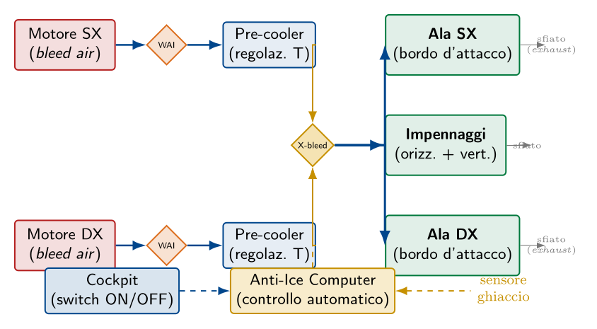
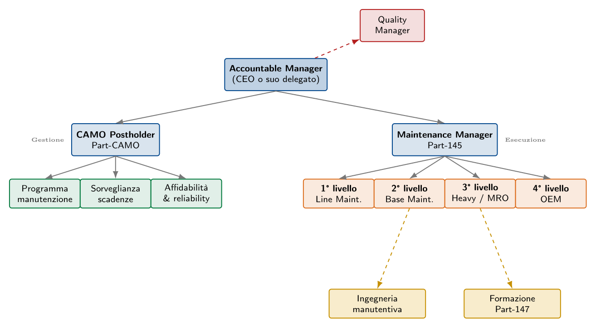

Esame di Stato 2025 — sessione suppletiva
Esame di Stato 2025 — sessione suppletiva
La sessione suppletiva del 2025 propone una Prima parte dedicata al dimensionamento di un aliante (configurazione strutturale e prestazionale completamente diversa dal motoelica della sessione ordinaria), e una Seconda parte con quattro quesiti tra cui il candidato ne sceglie due. Per completezza didattica trattiamo tutti e quattro: i primi due (PND con liquidi penetranti e funzioni degli elementi della semiala) sono già stati svolti nei capitoli precedenti e qui vengono sintetizzati con i necessari rimandi e con le specificità dell'aliante; il terzo (formazione di ghiaccio e impianto antighiaccio) e il quarto (struttura organizzativa di una compagnia aerea commerciale) sono argomenti completamente nuovi per il nostro opuscoletto.
Il velivolo di riferimento è un aliante con peso $W = 4{,}4\,\mathrm{kN}$, superficie alare $S = 10\,\mathrm{msquared}$, apertura alare $b = 17\,\mathrm{m}$, allungamento $\AR = b^2/S = 28{,}9$ (valore tipicamente elevato come è proprio degli alianti di prestazione), $C_{D_0} = 0{,}014$ e $C_{L,\max} = 1{,}55$. La presenza dell'aliante (privo di motore) cambia significativamente la pertinenza di alcune voci della trattazione: ad esempio, viene a mancare tutta la problematica del soffio dell'elica e dell'effetto P, mentre acquisiscono centralità gli aerofreni/spoiler e la qualità aerodinamica del bordo d'attacco.
Prova non distruttiva con liquidi penetranti
Il controllo non distruttivo con liquidi penetranti rileva difetti aperti in superficie (cricche, porosità, ripiegature) su qualsiasi materiale non poroso, sfruttando il fenomeno della capillarità. Per la trattazione completa — principio fisico, apparecchiatura, procedimento dettagliato a 6 fasi, vantaggi e limiti — si rimanda al paragrafo §sec:20xx-cap7-q4 del Capitolo §cap:esame20xx. In questa sede ricordiamo solo gli elementi essenziali e le specificità del caso aliante.
Sintesi del procedimento
- Pulizia preliminare: sgrassaggio con solvente per rimuovere oli, vernici, ossidi che potrebbero ostruire le discontinuità.
- Applicazione del penetrante: per immersione, spruzzo o pennellatura. Tempo di permanenza 15–30 min, durante il quale la capillarità fa penetrare il liquido nelle aperture.
- Rimozione dell'eccesso: con acqua, solvente o emulsificante a seconda del tipo di penetrante; lascia intatto il liquido intrappolato nelle cricche.
- Applicazione del rivelatore: strato sottile di polvere bianca; per capillarità inversa il penetrante intrappolato risale generando un'indicazione visibile, di forma e dimensioni amplificate.
- Ispezione: con luce visibile per i penetranti rossi, con lampada di Wood per i fluorescenti. Le indicazioni si classificano in lineari (cricche), rotondeggianti (porosità) e diffuse.
- Pulizia finale: rimozione completa di residui, redazione del rapporto di prova.
Specificità per il velivolo aliante
Sull'aliante, la zona più critica per il controllo PT è il cassone alare di radice, perché:
- l'allungamento elevato ($\AR = 28{,}9$) genera momenti flettenti alla radice di entità rilevante;
- la fatica è enfatizzata dal grande numero di cicli di volo (decolli al traino o al verricello, rilascio, virate termiche prolungate);
- molti alianti sono realizzati in materiali compositi: per essi il PT non è applicabile in modo classico (porosità del manufatto), e si ricorre a tecniche specifiche come tap test, ultrasuoni a phase array, termografia attiva.
Nei punti di interesse strutturale realizzati in lega leggera (attacchi metallici della semiala alla fusoliera, perni delle superfici mobili, spinotti del meccanismo di sgancio del cavo di traino), il controllo con liquidi penetranti è la PND di elezione e viene prescritto periodicamente nel programma di manutenzione del costruttore.
Funzioni degli elementi costruttivi della semiala dell'aliante
Per la trattazione completa delle funzioni di longheroni, correnti, centine, rivestimento, bordi d'attacco e d'uscita, alettoni, flap, slat, spoiler, winglet e attacchi, si rimanda al paragrafo §sec:2016-q4 del Capitolo §cap:esame2016. In questa sede mettiamo in evidenza le specificità della semiala dell'aliante rispetto a quella del velivolo motorizzato del 2016, dove l'allungamento elevato e l'assenza di motore introducono differenze costruttive significative.
Caratteristiche della semiala di un aliante di prestazione
Allungamento elevato.
Con $\AR = 28{,}9$ contro i 7-9 tipici dei velivoli da turismo, la semiala dell'aliante è caratterizzata da una grande corda relativa (apertura alare lunga rispetto alla corda media). Questa scelta progettuale massimizza l'efficienza aerodinamica $E = C_L/C_D$ riducendo la resistenza indotta ($C_{D_i} = C_L^2/(\pi \AR e)$), ma comporta:- momenti flettenti alla radice molto più elevati a parità di portanza;
- necessità di un cassone alare particolarmente robusto e di un attacco semiala-fusoliera molto rinforzato;
- maggiore sensibilità alla flessibilità (wing bending): in volo le estremità si flettono visibilmente verso l'alto.
Materiali costruttivi.
Gli alianti moderni di prestazione sono realizzati quasi esclusivamente in materiali compositi (resine epossidiche rinforzate con fibra di vetro, di carbonio, o ibride): i compositi consentono di ottenere superfici aerodinamicamente perfette (curve dolci, levigatezza superiore), spessori molto sottili e rapporto rigidezza/peso eccezionale. Il cassone alare a guscio (monocoque) sostituisce il tradizionale schema longheroni-correnti-centine.Profilo laminare.
Gli alianti utilizzano profili laminari (es.\ Wortmann, Eppler) che mantengono il flusso laminare per la prima metà della corda, riducendo significativamente la resistenza di attrito. Ciò richiede:- rugosità superficiale estremamente contenuta ($\le 1\,\mathrm{microm}$ Ra);
- assenza di rivetti o sporgenze sulla parte anteriore del dorso;
- particolare attenzione alla manutenzione della superficie (cera, lucidatura).
Elementi specifici dell'aliante: i diruttori (air-brakes
)A differenza del velivolo motorizzato, l'aliante non ha un motore che possa essere ridotto al minimo per controllare la velocità in discesa. Il pilota deve poter aumentare la resistenza al bisogno per gestire la traiettoria di avvicinamento. La soluzione standard sono i diruttori (Schempp-Hirth air-brakes), pannelli rigidi che si sollevano perpendicolarmente al dorso e/o al ventre della semiala:
- funzione strutturale: nessuna (sono elementi mobili, non resistenti);
- funzione aerodinamica: riducono drasticamente l'efficienza (da $E \approx 40$ a $E \approx 7$), aumentano la resistenza, riducono parzialmente la portanza locale;
- funzione funzionale: consentono al pilota di controllare la pendenza della discesa in avvicinamento all'atterraggio, di rispettare la never-exceed speed ($V_{NE}$) durante la cabrata in caso di entrata accidentale in nuvola, di decelerare in volo a fronte di velocità eccessive.
Elementi assenti rispetto al velivolo motorizzato
Sulla semiala dell'aliante mancano:
- flap di ipersostentazione: non sono indispensabili dato che la velocità di stallo è già molto bassa grazie al carico alare ridotto ($W/S = 4400/10 = 440\,\mathrm{N/msquared}$, contro i 600–1500 Npermsquared dei velivoli da turismo). Alcuni alianti li hanno comunque, in versione flaperon (combinati con gli alettoni);
- slat di bordo d'attacco: non necessari per le stesse ragioni;
- impianto antighiaccio del bordo d'attacco a soffio: assente per mancanza del motore con compressore da cui spillare aria calda; i pochi alianti certificati per condizioni di ghiaccio usano sistemi a glicoli in serbatoio dedicato.
Formazione di ghiaccio sulle ali e impianto antighiaccio
Meccanismo di formazione e zone critiche
Il ghiaccio si forma per impatto delle gocce d'acqua sopraffuse sulle superfici frontali del velivolo. Le zone critiche sono quelle dove il flusso ristagna o subisce forti variazioni di pressione:
- bordo d'attacco delle superfici portanti (ali, piani di coda, eliche): zona di ristagno aerodinamico, particolarmente importante per le caratteristiche di stallo;
- cerniere delle superfici di governo: il ghiaccio può bloccare alettoni, equilibratori, timone;
- prese d'aria dei motori: distacchi di lastre di ghiaccio possono essere ingeriti dal motore con danni alle palette;
- carburatori dei motori alternativi: l'espansione del flusso al Venturi e l'evaporazione del combustibile generano un raffreddamento locale che può portare alla formazione di ghiaccio anche con OAT positiva;
- tubi di Pitot e prese statiche: il loro intasamento porta a indicazioni di velocità e quota erronee, con rischi gravi (l'incidente Air France 447 del 2009 fu causato proprio dall'icing dei Pitot dell'A330);
- antenne radio e rivelatori di angolo d'incidenza.
Effetti del ghiaccio sull'aerodinamica
| Effetto | Conseguenza |
| Alterazione del profilo aerodinamico | Riduzione del $C_{L,\max}$ (anche del 30 %–50 %) e dell'incidenza di stallo. |
| Aumento della resistenza | $C_D$ può raddoppiare; la velocità di crociera scende e i consumi salgono. |
| Aumento del peso | Per accumuli prolungati: possibile sbilanciamento del velivolo. |
| Rumore aerodinamico anomalo | Indicazione precoce per il pilota. |
| Vibrazioni e flutter | Il ghiaccio asimmetrico sulle pale dell'elica genera vibrazioni dannose. |
| Bloccaggio dei comandi | Formazione di ghiaccio nelle cerniere. |
| Anomalie strumentali | Tubi di Pitot intasati $\to$ errori di velocità; prese statiche $\to$ errori di quota; rilevatore d'incidenza $\to$ allarmi falsi o assenti. |
Procedure preventive a terra: de-icing
e \emph{anti-icing} con glicoliPrima del decollo, in condizioni meteo critiche, il velivolo viene sottoposto a un trattamento di de-icing (rimozione del ghiaccio, neve o brina già depositati) seguito eventualmente da un trattamento di anti-icing (protezione contro la nuova formazione durante il rullaggio e nelle prime fasi del volo). I fluidi utilizzati sono soluzioni acquose di glicole etilenico o glicole propilenico, classificate dalla SAE in quattro tipi:
| p{1.5cm}X}
Tipo | Colore | Caratteristiche e impieghi |
| I | Arancio | Bassa viscosità, non gelificato. Spruzzato a caldo (55–80 °C) ad alta pressione per rimuovere ghiaccio e brina (de-icing). Protezione di breve durata. |
| II | Giallo chiaro | Pseudoplastico, contiene gelificanti. Aderisce alla superficie fino a velocità di rotazione di $\sim$100 kt, poi si distacca aerodinamicamente. Per anti-icing su velivoli di linea. |
| III | Giallo chiaro | Compromesso fra I e II, per velivoli con $V_{rot} < 100\,\mathrm{kt}$ (regionali turboelica). |
| IV | Verde | Stessi requisiti del tipo II ma con hold-over time maggiore (durata di protezione più lunga). Velivoli di lungo raggio. |
Sistemi anti-icing di bordo (prevenzione)
Il sistema anti-icing previene la formazione del ghiaccio mantenendo la superficie a una temperatura superiore a $0\,\mathrm{°}\mathrm{C}$. È la soluzione standard per i velivoli di linea, dove la sicurezza non può dipendere dall'attesa dell'accumulo. I metodi impiegati sono:
Sistema aerotermico (bleed air).
È la soluzione più diffusa sui velivoli a turbina di linea. Si spilla aria calda dagli stadi intermedi del compressore dei motori (a $\sim200\,\mathrm{°}\mathrm{C}$ e $\sim30\,\mathrm{psi}$) e la si distribuisce all'interno delle superfici da proteggere (bordi d'attacco delle ali, degli impennaggi, prese d'aria motori). La potenza specifica richiesta è dell'ordine di $9000\,\mathrm{kcal/msquared/h}$ ($\approx10{,}5\,\mathrm{kW/msquared}$). La portata massica d'aria necessaria si calcola da: $$\dot{m} = \frac{\dot{Q}}{c_p \cdot \Delta T}$$ ove $\Delta T$ è il salto termico fra l'aria spillata e la temperatura desiderata della superficie. L'inserimento dell'impianto comporta un degrado delle prestazioni del motore: tollerabile nei turbofan, problematico nei turboelica dove può perturbare l'equilibrio compressore-turbina-elica.Sistema elettrico a resistenze.
Resistenze elettriche disposte sulla superficie da proteggere riscaldano localmente. La potenza specifica è simile al sistema aerotermico ($\sim25\,\mathrm{kW/msquared}$). Si usa per piccole superfici non raggiungibili con condotti d'aria: prese di Pitot, parabrezza, rivelatori d'angolo, eliche dei turboelica. Sui velivoli completamente elettrificati di nuova generazione (Boeing 787 more electric aircraft) il sistema elettrico ha sostituito completamente quello aerotermico anche per le ali.Sistemi de-icing di bordo (rimozione)
Il sistema de-icing rimuove il ghiaccio dopo che si è già formato. È più economico in termini energetici dell'anti-icing, ma più rischioso: richiede di lasciar formare una certa quantità di ghiaccio prima di intervenire. È tipico dei velivoli turboelica regionali.
Sistema pneumatico a guaine (de-icer boots).
Sul bordo d'attacco delle superfici portanti sono incollate guaine elastiche in gomma. Cicli pulsanti di pressione (frequenza tipica 1 Hz) le gonfiano e sgonfiano: la deformazione provoca la frattura della crosta di ghiaccio formatasi, che viene poi spazzata via dal flusso aerodinamico. Sistema tipico di ATR-72, Bombardier Q400, Beech King Air. Inconvenienti: leggero disturbo aerodinamico anche a guaine sgonfie, deterioramento della gomma con il tempo, necessità di dosare con precisione l'istante di intervento.Sistema elettrico ciclico.
Pellicole di materiale conduttore disposte a reticolo sulla superficie sono alimentate ciclicamente: il ghiaccio si forma in lastre separate non unite fra loro, che vengono poi distaccate dall'alimentazione a impulsi.Schema funzionale dell'impianto aerotermico bleed air

Avvisatori di ghiaccio
A bordo dei velivoli moderni sono installati avvisatori di ghiaccio che segnalano al pilota l'imminente formazione, consentendo l'attivazione tempestiva dell'impianto. I tipi principali:
- meccanici a Venturi: un piccolo tubo Venturi con reticella di fili sottili nella sezione di ingresso; l'otturazione progressiva dei fili (che si ricoprono per primi di ghiaccio) modifica la distribuzione di pressione, attivando un segnale elettrico in cabina;
- elettro-ottici: un raggio luminoso riflesso da uno specchio incide su una cellula fotoelettrica; la formazione di ghiaccio interrompe il raggio attivando il sensore;
- vibranti a frequenza: una sonda metallica vibra alla sua frequenza naturale; il ghiaccio depositato altera la massa risonante e quindi la frequenza, rilevata elettronicamente.
Struttura organizzativa manutentiva di una compagnia aerea
Le quattro categorie manutentive
La manutenzione di una compagnia aerea si organizza in quattro categorie (o "livelli") in funzione della profondità dell'intervento, dell'impegno di tempo e dell'attrezzatura richiesta:
- 1° livello — Line Maintenance
- Manutenzione di linea, eseguita in pista sul velivolo pronto al volo o fra due voli consecutivi. Comprende: pre-flight check, transit check (fra un volo e il successivo), turnaround, ripristino di anomalie minori (deferred items), rifornimento, controllo livelli. Tempi: minuti, fino a poche ore.
- 2° livello — Base Maintenance leggera
- Manutenzione in hangar nella base operativa, a velivolo fermo a fine giornata o per intervento programmato. Comprende: A-check (400–600 ore), B-check (semestrale), sostituzione di componenti che richiedono smontaggio limitato. Tempi: notte/giornata.
- 3° livello — Heavy Maintenance / MRO
- Manutenzione pesante in centro di manutenzione specializzato (talvolta esterno alla compagnia, in MRO — Maintenance, Repair and Overhaul). Comprende: C-check (ogni 20–24 mesi, 1–3 settimane di fermo) e D-check (ogni 6–10 anni, 1–2 mesi di fermo, smontaggio strutturale completo). Centri tipici: Lufthansa Technik, AFI KLM E&M, ST Aerospace.
- 4° livello — OEM (Original Equipment Manufacturer)
- Riparazioni profonde dei sottosistemi (motori, eliche, carrelli, computer di volo) eseguite presso la ditta costruttrice. Comprende l'Overhaul completo del motore (TBO 20 000–30 000 ore per i turbofan moderni), la riparazione di parti strutturali primarie, le modifiche di service bulletin. Centri tipici: GE Aviation, Pratt & Whitney, Rolls-Royce, Safran.
Quadro normativo
| X}
Normativa | Oggetto |
| Part-CAMO | Organizzazione di gestione dell'aeronavigabilità continua. Responsabile del programma di manutenzione del velivolo, del rinnovo dell'ARC, della sorveglianza delle scadenze, della scelta delle officine. |
| Part-145 | Organizzazione di manutenzione approvata (AMO). Responsabile dell'esecuzione fisica della manutenzione, del rilascio del CRS (Certificate of Release to Service). |
| Part-66 | Licenze del personale di manutenzione (LMA — Licenza di Manutentore Aeronautico). Categorie A, B1, B2, C. |
| Part-147 | Scuole di formazione approvate per la Part-66. |
| Part-21 | Aeronavigabilità iniziale (Type Certificate, Production Certificate). |
Organigramma di una compagnia aerea

Funzioni principali associate a ciascuna categoria manutentiva
| p{2.4cm}X}
Categoria | Personale | Funzioni principali |
| 1° livello\newlineLine Maintenance | Tecnici Part-66 cat.\ A e B1/B2 | Pre-flight check, transit check, turnaround, controllo livelli (carburante, olio, idraulico, ossigeno), ispezione visiva, riparazione di MEL items deferred, troubleshooting di fault report, rilascio del CRS per gli interventi minori. Operativo h24 in scali principali. |
| 2° livello\newlineBase Maintenance | Tecnici Part-66 cat.\ B1, B2 (e cat.\ C per gli scheduled checks) | Esecuzione di A-check, B-check; sostituzione di LRU (Line Replaceable Unit) come pompe, generatori, attuatori; lubrificazione completa; prove funzionali su tutti gli impianti; rilascio CRS. Operatività in hangar, tipicamente notte. |
| 3° livello\newlineHeavy Maint.\newlineMRO | Tecnici Part-66 cat.\ B1, B2, C + specialisti strutturali, NDT level II/III | Esecuzione di C-check e D-check; riparazioni strutturali primarie; ispezioni NDT estese (UT, ET, RT, PT) sull'intera struttura; verniciatura completa; refurbishing della cabina; aggiornamenti di Service Bulletin; aggiornamenti avionica. |
| 4° livello\newlineOEM Overhaul | Personale del costruttore (engineers + tecnici di Tipo) | Overhaul del motore (smontaggio completo, sostituzione tutte le palette di turbina, ispezione boroscopica, riassemblaggio, banco prova); revisione di carrelli, eliche, computer di volo; gestione parti a vita limitata; sviluppo modifiche e Service Bulletin. |
Funzioni trasversali
Oltre alle quattro categorie operative, la compagnia aerea include funzioni trasversali fondamentali:
- Quality Manager: responsabile del sistema di qualità (audit interni, monitoraggio KPI, gestione Safety Management System, interfaccia con ENAC/EASA).
- Reliability Engineering (parte della CAMO): analisi statistica dei guasti, aggiornamento del programma di manutenzione (es.\ riduzione dell'intervallo per un componente che mostra alto MTBF), proposte di modifiche al costruttore.
- Technical Records: gestione documentale di tutti gli interventi, libretti di velivolo e componenti, scadenze, ARC, archivio delle modifiche.
- Magazzino e logistica: gestione delle parti di ricambio, certificazione (EASA Form 1) di ogni parte movimentata, accordi di pooling con altre compagnie.
- Pianificazione operativa: coordinamento fra movimenti dei velivoli e finestre di manutenzione, ottimizzazione dell'utilizzo della flotta.
- Formazione: formazione iniziale e continua del personale, gestione dei type rating sulle qualifiche Part-66.